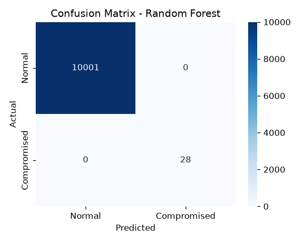
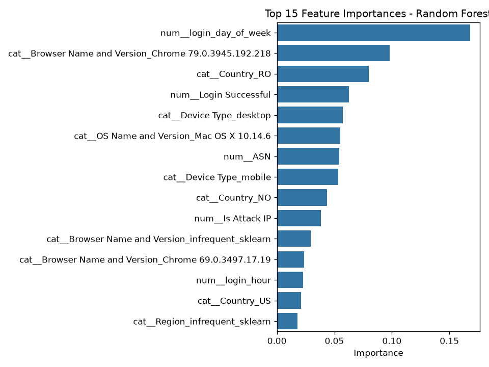

Account takeover · Results
The model results.
Test-set performance of the three classifiers, the confusion matrix, feature importance and every project resource — generated by train_model.py.
Best model
Best model
Test-set performance of the strongest model. Note: the dataset is synthetic and highly separable; these scores would be lower on real-world traffic.
Correct predictions across both classes.
How often a takeover flag is correct.
How many takeovers the model finds.
Separation between the two classes.
Comparison
Model comparison.
Accuracy on the test set, followed by the full metric table used to select the final model.
| Model | Accuracy | Precision | Recall | F1-score | ROC-AUC |
|---|
Evaluation
What the model learned.
The confusion matrix shows how accounts were classified; feature importance shows which signals drove the Random Forest.


Demo
Try the live model.
The trained model runs inside a Flask prediction app. Run it locally to submit your own account activity and receive a label with a probability.
Sample prediction
Potentially compromised account
98.7%
Sample output. Run python app.py and visit 127.0.0.1:5000/predict to test your own inputs.
Conclusion
What this shows.
Supervised machine learning can help identify potentially compromised accounts by learning patterns that separate normal activity from suspicious behaviour. A trained classifier can flag risky accounts for review sooner than manual checks, and comparing several models shows which approach fits the data best.
The exercises also make the limits clear: rare classes demand careful metric choice, and synthetic data can flatter a model. Reporting the full metric set keeps the result honest.
Resources
Everything in one place.
Source code, the public dataset, documentation and the raw comparison data.
GitHub repository
Source code, notebooks and project files.
Dataset
Login Data Set for Risk-Based Authentication.
Documentation
Project README and setup guide.
Model comparison data
Accuracy, precision, recall, F1 and ROC-AUC per model.
Project report
Full methodology, evaluation and discussion.
Continue
Read the full case study.
The problem, the dataset, the modelling decisions and the Flask application.